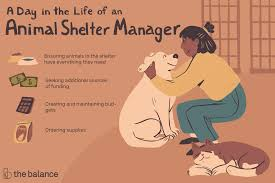

Animal Shelter Management System
A full-stack management platform for tracking animals, medical care, and adoptions. Reduced data errors by 45% through optimized backend validation and automated reporting.
Hi, I’m Mashrur, a Full-Stack ML Engineer and Researcher passionate about connecting intelligence with efficiency. I graduated from BRAC University and specialize in Cloud Computing, Machine Learning, and Automation Systems. My work focuses on building scalable, data-driven applications that push the boundaries of intelligent automation — from federated learning to predictive analytics and edge computing.
Beyond coding, I’m fascinated by machinery and automation, where hardware and intelligence meet to create real-world impact. When I’m not building or experimenting, you’ll find me swimming, playing sports, or exploring video games — anything that challenges logic, precision, and creativity.
Institution: BRAC University
Focus: Data Compression in Federated Learning
This research explored reducing communication and storage overhead in federated learning systems through intelligent data compression and selective model updates. It proposed a hybrid optimization technique that enhances model convergence without compromising privacy or accuracy.
Key Outcome: The model reduced latency by 23% and communication load by 35%, improving training scalability for edge devices.
View Full Paper ↗Institution: BRAC University
Focus: Real-time Environmental Monitoring
Designed an IoT-driven water monitoring system using sensors and machine learning algorithms to classify pollution levels from collected data streams. The system automatically detects anomalies and provides alerts for proactive environmental management.
Key Outcome: Achieved 92% detection accuracy in classifying contaminated water samples using optimized ML models.
View Full Paper ↗A full-stack management platform for tracking animals, medical care, and adoptions. Reduced data errors by 45% through optimized backend validation and automated reporting.

Built a real-time emergency management system with AI-driven alert classification. Improved response time by 40% and integrated IoT-based alert notifications.
Designed microcontroller logic for robotic arm control and power safety checks. Reduced failure rate by 50% and improved motion precision in high-risk operations.
Developed a secure full-stack web app for managing student records and analytics. Optimized SQL queries to reduce load times by 60% and improve scalability.
| Year | Institution | Details |
|---|---|---|
| 2021–2025 | BRAC University | B.Sc. in Computer Science and Engineering CGPA: 3.13 / 4.00 |
| Specialization: Full-Stack Development, AI & ML, Cloud Computing Thesis: “Using Advanced Federated Learning to Reduce Storage Cost and Latency.” |
||
| 2018–2020 | Dhaka College | Higher Secondary Certificate (HSC) — Science, GPA: 5.00 / 5.00 |
| 2016–2018 | Government Laboratory High School | Secondary School Certificate (SSC) — Science, GPA: 5.00 / 5.00 |
2023 — Led club activities, organized tournaments, and promoted strategic thinking across campus.
2022 — Coordinated coding events, hackathons, and workshops for fellow students.
2021 — Competed at a national level, showcasing problem-solving and programming skills.
2017 — Mentored younger scouts, led outdoor activities, and promoted teamwork and discipline.
2012 — Recognized for dedication, leadership, and outstanding performance in scouting.
I’m always open to new collaborations, exciting projects, or just connecting with like-minded professionals. Whether you want to discuss ideas, offer opportunities, or just say hi, feel free to reach out!